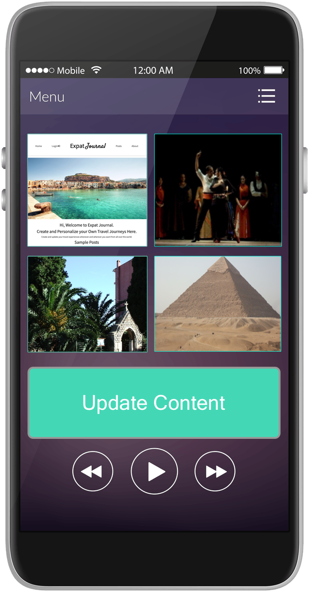

About Us
Our mission is to bring you the ability to share your stories from all over the world to connect with other expats and digital nomads
to find a sense of community that doesn't exist on facebook or instagram. Post, Edit, Blog, and interact from anywhere with internet. Each of us that
travels or permanently is traveling and works remote or knows just how isolating it can get and that despite all of the amazing connections you make
all over the world and friends you make, it feels better to have a core community to fill that void that you all feel allowing core groups to see your journey.

Join us here and start sharing because life is to short to go at it alone all the time. Miss that sense of community from home or just
want to show your friends back home more than instagram posts? Share what's happening now.
Happy adventuring fellow nomads, expats, and travelers!